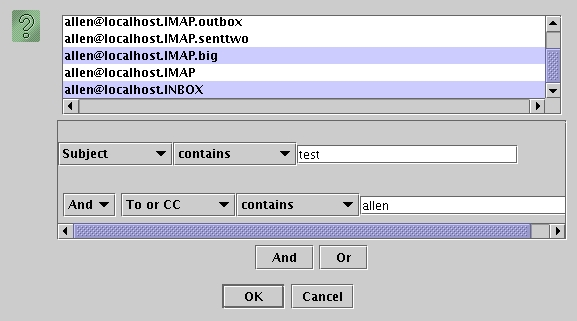

F3 or /
, go to Mail->Search Folder, or hit the  Binocular icon on the Folder Toolbar
Binocular icon on the Folder ToolbarYou can use Pooka to search through messages in one or more folders.
To bring up the Search Panel, you can either hit F3 or /
, go to Mail->Search Folder, or hit the
Binocular icon on the Folder Toolbar
In the Search Dialog, you can specify which folders to search and which search to perform. The upper part of the panel gives you a choice of all of the Folders current known by Pooka, with the current folder selected by default. The bottom panel lets you choose which specific queries you want to use in your search.
You can make a more complex query by using the "And" and "Or" buttons at the bottom of the Dialog.
Once you have constructed your search, hit 'Ok' execute the query. A window will pop up while Pooka performs the search. Once it is done, a Search Results window will show up with the results of your query. If no messages match, then the window will be empty.